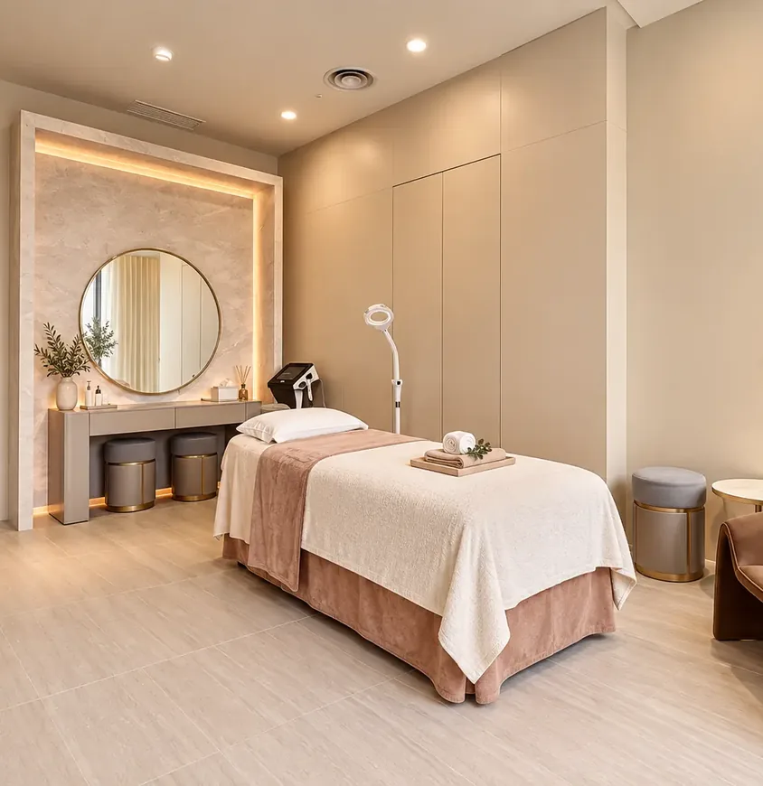
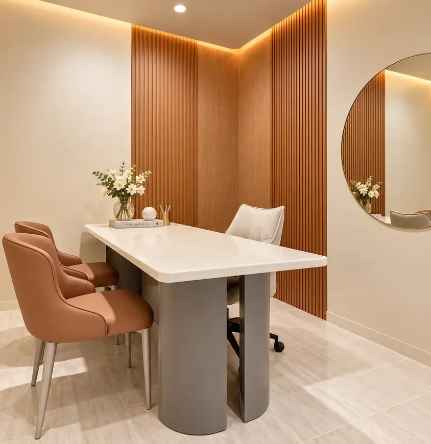
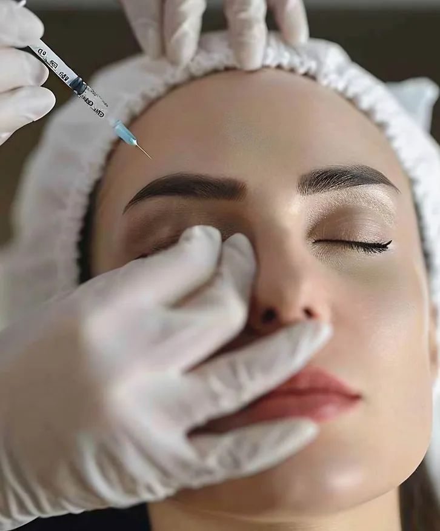

Skin booster treatment in Kuala Lumpur
Skin boosters improve hydration, texture, elasticity and overall skin quality without adding volume. Da Vinci offers eleven formulations, from hyaluronic acid to polynucleotides, so the choice is made on your skin, not on one brand.
Treatment details
As published for the main treatment in this family. Your doctor confirms the plan after assessment.
Procedure time
15 to 30 minutes
Downtime
Minimal, slight redness for a few hours
Anaesthesia
Numbing cream
Results last
Up to 6 months, varying by product
The booster families we use
There is no single best skin booster. Hyaluronic acid for hydration, polynucleotides for repair, collagen stimulators for firmness.
Hyaluronic acid boosters
Profhilo, Belotero Revive, Juvederm SKINVIVE and Neauvia Hydro Deluxe for deep hydration and smoothness.
Polynucleotides
Plinest and Newest (Mastelli) and Rejuran, DNA fragments that repair and regenerate the skin at a cellular level.
Regenerative and hybrid
Exosomes, Inbiotec Amber, NCTF 135HA, JuveLook, Nucleoskin and Suisselle Cellbooster for radiance and skin density.
Why have skin boosters at Da Vinci


Top achiever awards
NCTF and Plinest Top Achiever awards, Top 10 Belotero Revive provider, SKINVIVE early user.

Doctors who train on these products
Dr. Tristan Tan is a Plinest Newest KOL ambassador and certified Cellbooster KOL.
Authentic products
Every booster is sourced from its original maker.
Lunchtime-friendly
Fifteen to thirty minutes with slight redness that settles within hours.
Dry, dull, rough or tired-looking skin
DV™ GlassSkin pairs lasers for tone with boosters for hydration, four to five sessions a month apart.
• Dehydrated or dull skin and fine lines
• Enlarged pores and uneven texture
• Acne scars and loss of elasticity
• Hands, neck and décolletage
Your treatment journey, step by step
The same four steps at every Da Vinci clinic, so you always know what happens next.

Consultation
A doctor assesses your skin and listens to what you want to improve. No sales consultant.

Tailor-made treatment
Pricing explained before anything starts. FDA-cleared devices and authentic injectables only.

Skin assessment
Skin analysis and a treatment plan matched to your concern, skin type and lifestyle.

Post-treatment care
Aftercare advice, follow-up reviews and BIO.CX375 skincare to protect your results.
Energy, facial, booster, aftercare
Four to five sessions, one month apart.

Frequently asked questions
Answers from the Da Vinci doctors.
A skin booster delivers skin-rejuvenating ingredients into targeted areas to improve hydration, texture, radiance and overall skin quality. Formulations vary and may contain hyaluronic acid, polynucleotides or other skin-supporting ingredients.
No. Dermal fillers add volume and contour; skin boosters work across larger surface areas to improve quality without adding volume.
There is no single best. Hyaluronic acid formulations suit hydration and smoothness; polynucleotide and collagen-supporting formulations suit repair, texture or elasticity. Your doctor recommends after assessment.
It varies by product, area and lifestyle. Rejuran is quoted at best results with two sessions and maintenance every six to twelve months; Plinest maintenance every six months; Juvelook two to three sessions four to six weeks apart.
Brief stinging or pressure. Numbing cream is applied beforehand.
Temporary redness, tenderness or small injection bumps that improve within hours to a few days depending on the product.
Skin and aesthetic insights
Plain explanations of treatments, written by the Da Vinci team.



Start your beauty journey today
Every treatment begins with an honest clinical consultation at any of our four Kuala Lumpur clinics. No pressure, no upselling.